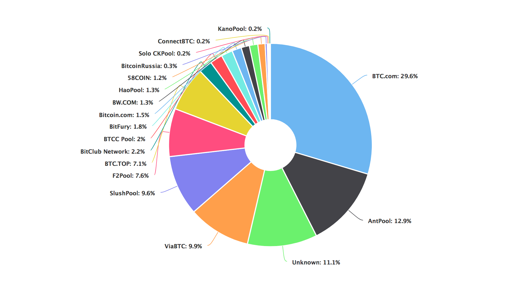

Mining pools are groups of cooperating miners who agree to share block rewards in proportion to their contributed mining hash power.
While mining pools are desirable to the average miner as they smooth out rewards and make them more predictable, they unfortunately concentrate power to the mining pool’s owner.
Miners can, however, choose to redirect their hashing power to a different mining pool at anytime.
Before we get into the best mining pools to join, it’s important to note that most mining pools are in China. Many only have Chinese websites and support. Mining centralization in China is one of Bitcoin’s biggest issues at the moment.
There are about 20 major mining pools. Broken down by the percent of hash power controlled by a pool, and the location of that pool’s company, we estimate that Chinese pools control ~81% of the network hash rate:
China - 81%
Czech Republic - 10%
Iceland - 2%
Japan - 2%
Georgia - 2%
Russia - 1%
The list below details the biggest Bitcoin mining pools. This is based on info from Blockchain’s pool share chart:
BTC.com is a public mining pool that can be joined. However, we strongly recommend joining Slush Pool instead.
Antpool is a mining pool based in China and owned by BitMain. Antpool mines about 25% of all blocks.
ViaBTC is a somewhat new mining pool that has been around for about one year. It’s targeted towards Chinese miners.
Slush was the first mining pool and currently mines about 3% of all blocks.
Slush is probably one of the best and most popular mining pools despite not being one of the largest.
DiscusFish, also known as F2Pool, is based in China. F2Pool has mined about 5-6% of all blocks over the past six months.
BTC.top is a private pool and cannot be joined.
Bitclub Network is a large mining pool but appears to be somewhat shady. We recommend staying away from this pool.
BTCC is a pool and also China’s third largest Bitcoin exchange. Its mining pool currently mines about 7% of all blocks.
Bitfury is a private pool that cannot be joined. Bitfury currently mines about 2% of all blocks.
BW, established in 2014, is another mining company based in China. It currently mines about 2% of all blocks.